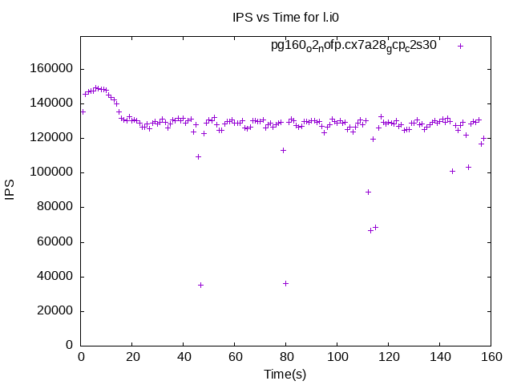
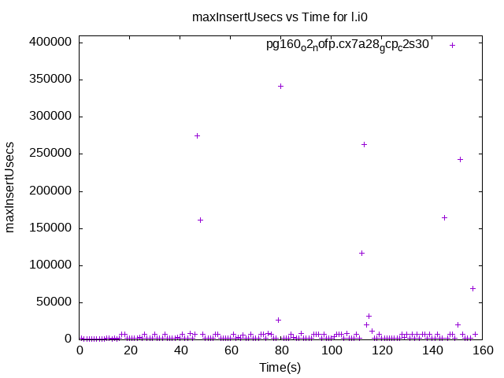
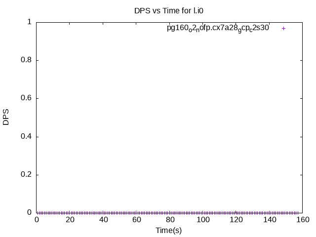
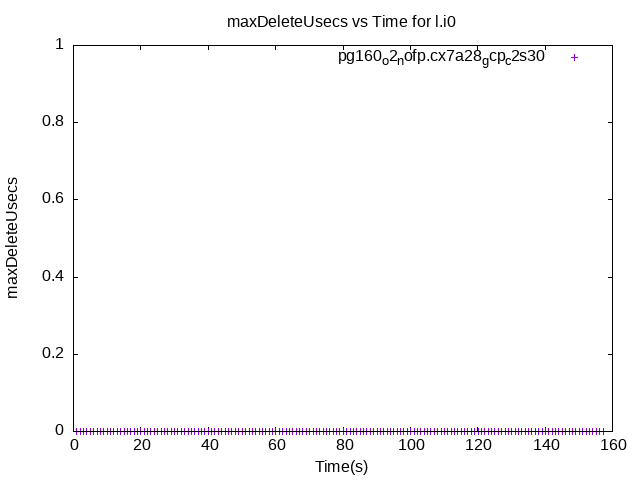
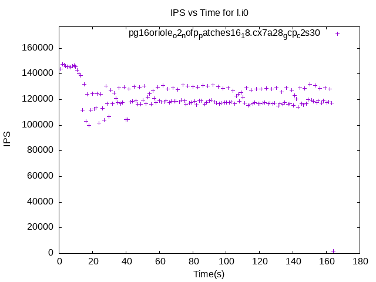
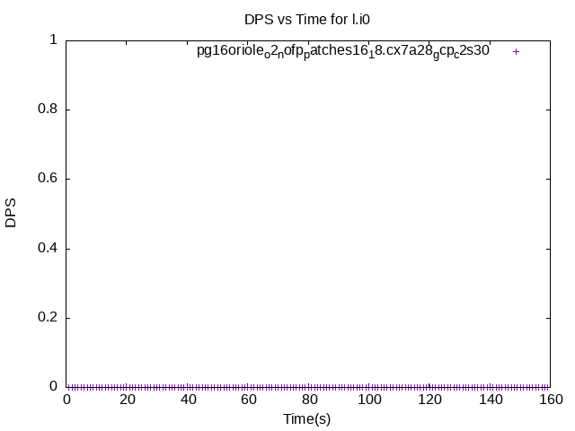
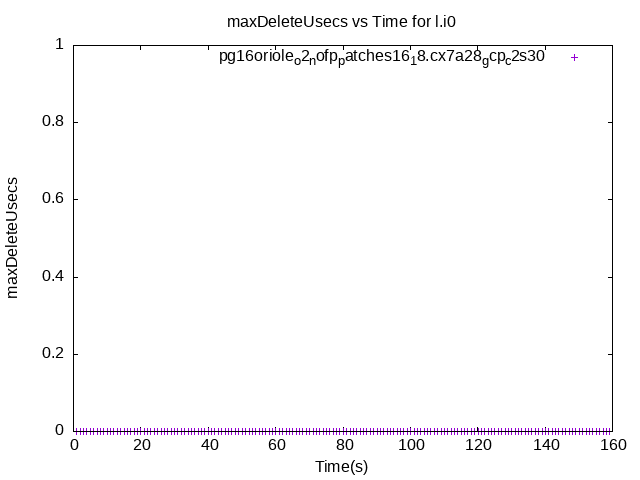

These have results per 1-second interval for: insert rate (IPS), max insert response time, delete rate (DPS) and max delete response time.
The results are from 1 client while the test may have N clients where N > 1.
Deletes might not have been enabled for this benchmark step, in which case those graphs will show zero values.
Contents
pg160_o2_nofp.cx7a28_gcp_c2s30: IPS
pg160_o2_nofp.cx7a28_gcp_c2s30
pg160_o2_nofp.cx7a28_gcp_c2s30: max insert response time
pg160_o2_nofp.cx7a28_gcp_c2s30
pg160_o2_nofp.cx7a28_gcp_c2s30: DPS
pg160_o2_nofp.cx7a28_gcp_c2s30
pg160_o2_nofp.cx7a28_gcp_c2s30: max delete response time
pg160_o2_nofp.cx7a28_gcp_c2s30
pg16oriole_o2_nofp_patches16_18.cx7a28_gcp_c2s30: IPS
pg16oriole_o2_nofp_patches16_18.cx7a28_gcp_c2s30
pg16oriole_o2_nofp_patches16_18.cx7a28_gcp_c2s30: max insert response time
 pg16oriole_o2_nofp_patches16_18.cx7a28_gcp_c2s30
pg16oriole_o2_nofp_patches16_18.cx7a28_gcp_c2s30
pg16oriole_o2_nofp_patches16_18.cx7a28_gcp_c2s30: DPS
pg16oriole_o2_nofp_patches16_18.cx7a28_gcp_c2s30
pg16oriole_o2_nofp_patches16_18.cx7a28_gcp_c2s30: max delete response time
pg16oriole_o2_nofp_patches16_18.cx7a28_gcp_c2s30